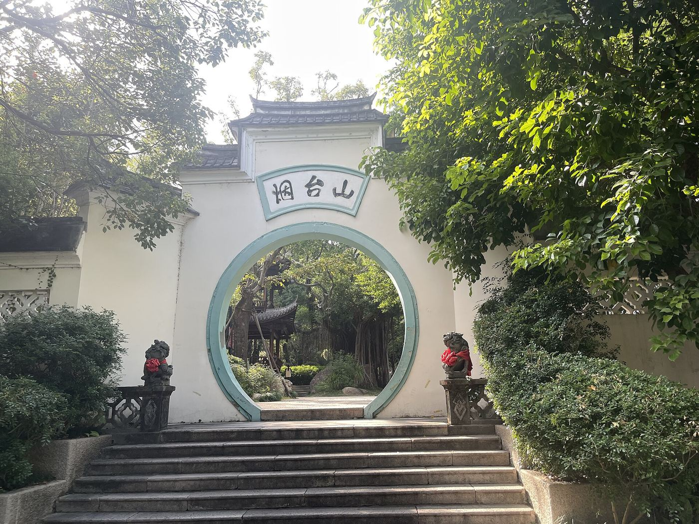
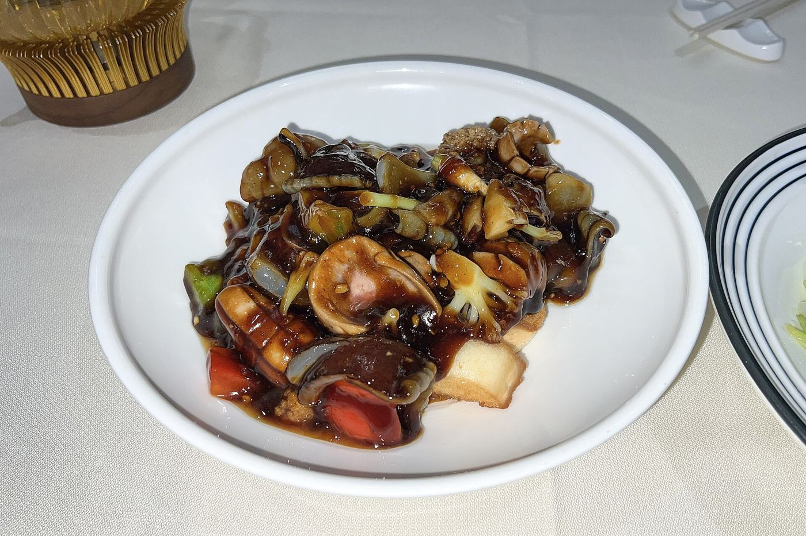
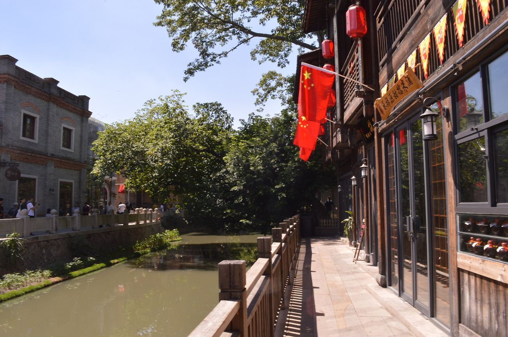
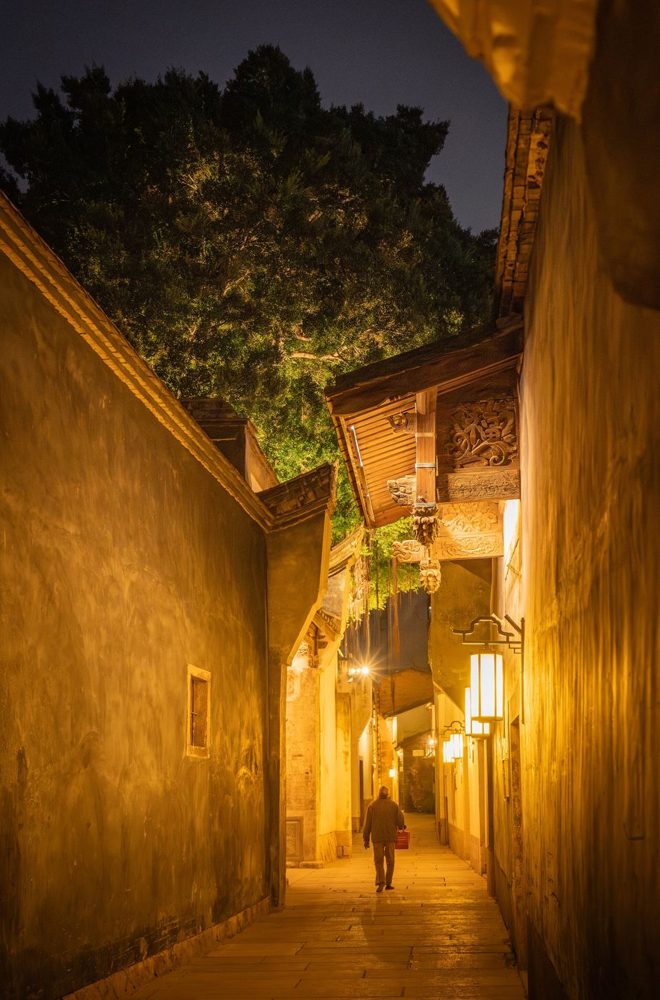
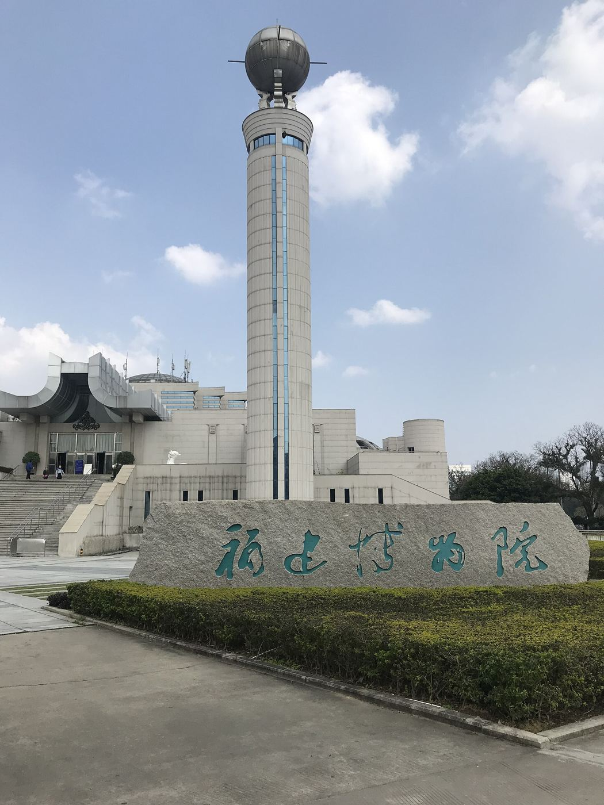

福州2天慢游：古巷、江风，累了就坐一会儿
两天不用把福州全装进行李箱。这条以市区为主，适合想慢慢走、喝茶、吃一顿闽菜的人；琅岐当作多一天的海边延伸，不硬塞进两天里。

路线一眼看懂
| 时间 | 去哪 | 怎么留白 |
|---|---|---|
| 第一天下午 | 烟台山街巷和老建筑，2–3 小时 | 找个地方坐着歇会儿 |
| 第一天晚饭后 | 仓前江边或闽江之心一段，约 1 小时 | 不用两岸都走完 |
| 第二天上午 | 朱紫坊，约 1 小时 | 茶室、早餐按营业情况选 |
| 第二天午后 | 上下杭，1.5–2 小时 | 返程早就缩短，不补打卡 |
第一天：烟台山和一段江风
到了先放行李，再去烟台山。可以从上藤站一带找接驳。老建筑慢慢看，进室内先看开不开放；坡道走累了，就找个公共休息处坐会儿。下午就待在这一片，不再赶去三坊七巷。
晚饭吃闽菜：荔枝肉、爆炒双脆按人数点，两个人先少点几道，想吃再加。

饭后去仓前江边，或者闽江之心挑一段走。想跨江先看步行条件和时间，别把一小时散步走成拉练。
第二天：朱紫坊慢逛，再去上下杭
上午留给朱紫坊，古厝和街巷慢慢看，这里有居民生活，别随便进不开放的院子。午后去上下杭看河道、古桥和会馆外观。


下雨或不想多走
把一段户外换成福建博物院，先看当天开放和当期展览，一般周一闭馆。

多一天：把时间留给琅岐海边
市区玩完再去琅岐，车程看当天导航。看海、喝茶、和朋友聚聚；赶海看潮汐、天气和现场管理，赶不上低潮就安心散步。

只有两天、又想住海边：第一天三坊七巷或烟台山二选一，下午去琅岐；第二天在海边歇一歇再返程，朱紫坊和上下杭留给下次。

停留时长和路线是我们的建议，开放时间、票务、交通和店铺营业会变，出发前再查一下当天的信息。